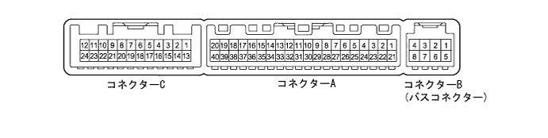
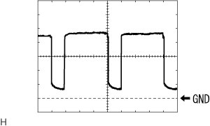
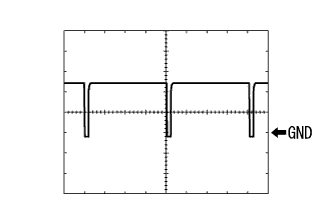

(Terminal Symbol)
 )
)Heater & Air Conditioner System Terminals of ECU |

| Inspection Terminal (Terminal Symbol) | Input/Output | Item | Condition | Standard |
|---|---|---|---|---|
| A1(IG+ - A14(GND) | Input | Voltage | IG ON | 11 to 14 V |
| A2(SOL+) - A14(GND) | Output | Waveform | Engine idling, blower switch LO, A/C switch ON | Pulse Generation (Waveform 2) |
| A9(PRE) - A13(SG-2) | Input | Voltage | When refrigerant pressure is normal | 0.76 to 4.74 V |
| A9(PRE) - A13(SG-2) | Input | Voltage | When refrigerant pressure is abnormal 0.196MPa{2.0kgf/cm2} or less or refrigerant pressure3.14MPa{32kgf/cm2} or more | 0.76 V or less or 4.74 V or more |
| A10(S5-3) - A14(GND) | Output | Voltage | IG ON | 4.5 to 5.5 V |
| A11(CANH) - A14(GND) | Input/Output | Waveform | IG ON | Pulse Generation |
| A12(CANL) - A14(GND) | Input/Output | Waveform | IG ON | Pulse Generation |
| A13 (SG-2) - Body ground | - | Resistance | Always | Below 1 Ω |
| A14 (GND) - Body ground | - | Resistance | Always | Below 1 Ω |
| A21(B) - A14(GND) | Input | Voltage | Always | 11 to 14 V |
| A23(BLW) - A14(GND) | Output | Waveform | IG ON, blower switch LO | Pulse Generation (Waveform 1) |
| A29(TR) - A34(SG-1) | Input | Voltage | IG ON, front cabin temperature 25°C | 1.8 to 2.2 V |
| A31 (S5-4) - Body ground | - | Voltage | Always | 4.5 to 5.5V |
| A33(TS) - A31(S5-4) (*2) | Input | Voltage | IG ON, front passenger side solar sensor, shade → sunlight or apply inspection light | Approximately 0.8 V → 0.8 to 4.3V (changes according to light intensity) |
| A32(TSP) - A31(S5-4) (*1) | Input | Voltage | IG ON, front passenger side solar sensor, shade → sunlight or apply inspection light | Approximately 0.8 V → 0.8 to 4.3V (changes according to light intensity) |
| A33(TSD) - A31(S5-4) (*1) | Input | Voltage | IG ON, front passenger side solar sensor, shade → sunlight or apply inspection light | Approximately 0.8 V → 0.8 to 4.3V (changes according to light intensity) |
| A34 (SG-1) - Body ground | - | Resistance | Always | Below 1 Ω |
| A37(LIN1) - A14(GND) | Input/Output | Waveform | IG OFF→ON | Pulse Generation |
| A38(RDFG) - A14(GND) | Output | Voltage | IG ON Rear defogger switch OFF → ON | 11 to 14 V → 1V or less |
| A39(PCD1) - A14(GND) (*1) | Output | Voltage | IG ON, ion generator not controlled → controlled | 11 to 14V → 1V or less |
| A40(PCD2) - A14(GND) (*1) | Output | Voltage | IG ON, negative ions not controlled → controlled | 11 to 14V → 1V or less |
| Inspection Terminal [Terminal Symbol] | Input/Output | Item | Condition | Standard |
|---|---|---|---|---|
| B2 (BUSG) - Body ground | - | Resistance | Always | Below 1 Ω |
| B3(BUS) - B2(BUSG) | Input/Output | Waveform | IG ON | Pulse Generation |
| B4(BBUS) - B2(BUSG) | Output | Voltage | Always | 11 to 14 V |
| B5 (SG-3) - Body ground | - | Resistance | Always | Below 1 Ω |
| B6(TE-fin) - B5(SG-3) | Input | Voltage | IG ON, evaporator ambient temperature 15°C | 1.4 to 1.8 V |
 |
Waveform 1
| Measurement Terminal | BLW - GND |
| Tool Setting | 1V/DIV、500μs/DIV |
| Measurement Condition | IG ON, blower switch LO |
 |
Waveform 2
| Measurement Terminal | SOL+ - GND |
| Tool Setting | 5V/DIV、500μs/DIV |
| Measurement Condition | Engine idling, blower switch LO, A/C switch ON |
| Inspection Terminal (Terminal Symbol) | Input/Output | Item | Condition | Standard |
|---|---|---|---|---|
| 2(IG+) - 5(GND) | Input | Voltage | IG ON | 11 to 14 V |
| 5 (GND) - Body ground | - | Resistance | Always | Below 1 Ω |
| 10(LIN1) | Input/Output | - | Service Inspection (see) | - |